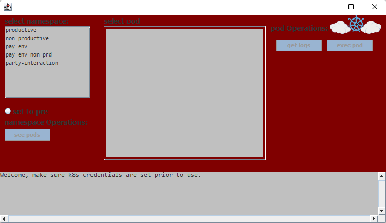
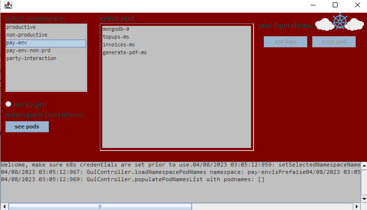
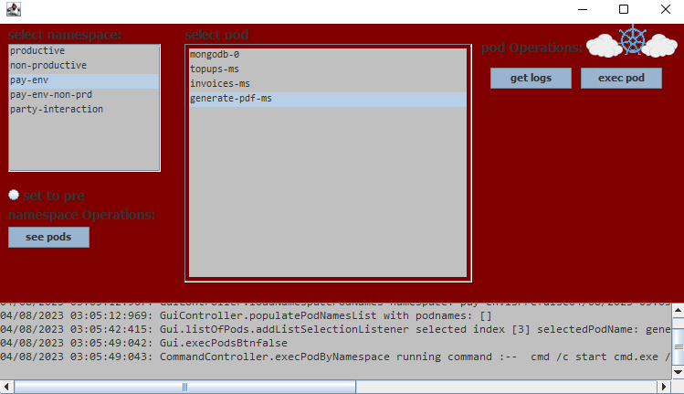

This program was initially conceived as a Gui for a command line command runner for Kubernetes k get logs *** -n ** command and other frequent commands that monitor a Kubernetes system.
However, the limitation was that the program had to be built using only java 1.8 due to being the only available that could interact with windows command line available inside of a Citrix Windows Virtual Environment that had access to the Kubernetes cluster.
A simple batch script could take care of the engine to run Kubernetes commands and switch some placeholders for actual pod/namespace names however, it wouldn’t give us the Gui with buttons that we needed for user experience.
Java 1.8 was the way to go, a jre pretty much the was the only thing available on the machine that could run our idea on. As supported in Initial problem.
The Gui was built with Swing since as opposed to jfx hasn’t yet been discontinued and it’s a commonly known technology that can be used with Window Builder and not only that people are familiarized with it so it would also be familiar to maintain in the future.
This is essentially resolving / developing a around the following lines of code:
public void openCmdWindowAndRunCommand(String command) throws IOException , InterruptedException {
Runtime.getRuntime().exec(command);
}
or in most cases like:
public Process openCmdWindowAndRunCommand(String comando) throws IOException, InterruptedException {
Process process;
try {
process = Runtime.getRuntime().exec(comando);
} catch (IOException e) {
e.printStackTrace();
return null;
}
return process;
}
This will execute in the windows command line a string command. This could be something like a “k get pods -n abc” or a “java -version”, a curl, an ftp you get the idea. However, when java runs a command, it does not open the command line! You don’t see it!
To counter that if you think about it, you will just need to run a command to open a command line window to run another command inside that opened window. Luckily there is an easy implementation to that which is just wrapping your commands as follows:
String ABRIR_O_CMD="cmd /c start cmd.exe /K \"echo hello Rui! \"";
The rest of the algorithms should reside in swapping character placeholders in your string commands :D
These are pretty much the two main features on how to achieve a program like this using Java syntax.
It obviously looks like a Java swing application :D although that might seem a little bit outdated its usefulness helps team members that used it saving a lot of time over typing these same commands.
  